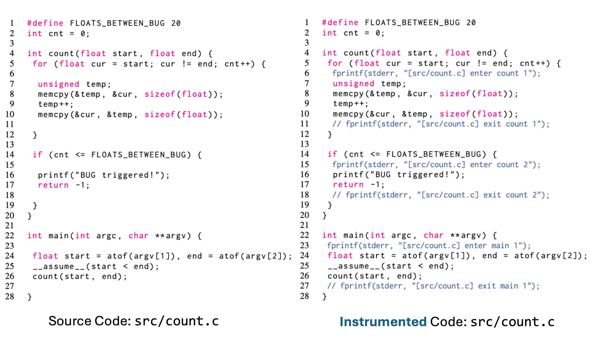

Documentation
The source code of ConcoLLMic is available on GitHub.Overview
ConcoLLMic is a language- and theory-agonistic concolic execution engine, powered by a collection of LLM agents. ConcoLLMic performs fuss-free concolic testing across environments and languages, including polyglot systems.
Main features of ConcoLLMic include:- Source-code-level instrumentation for any language.
- Flexible representations (natural language, code, SMT) for path constraints.
- Readable test cases.
- Minimizes hallucination with real executions, coverage tracking, and tool use.
System Diagram

Workflow Illustration: Floating-point theory in C
Phase 1: Instrumentation
Example instrumentation of src/count.c by inserting fprintf at key execution points. Output in stderr allows reconstruction of the dynamic execution path.

Phase 2: Concolic Testing
Compared to verbose formulas used by traditional tools, e.g.,
start = atof(I[0]) /\ end = atof(I[1]) /\
start < end /\ cur[0] = start /\
(for all 0 ≤ i < cnt, cur[i] != end) /\
cur[cnt] == end /\ cnt ≤ 20ConcoLLMic summarizes the path constraints concisely and solves for an input:
The number of representable FP values in the range must be ≤ 20.The example workflow to generate such a constraint (and a matching input) is shown below, where the Summarization Agent and the Solving Agent work together towards the goal.

Reproducing Results from Paper
For running example real-world projects, see instructions on GitHub.
User Guide of ConcoLLMic
Installation
https://github.com/ConcoLLMic/ConcoLLMic.git ConcoLLMic && cd ConcoLLMic
pip install -r requirements.txt
pip install -r requirements-dev.txt
export ANTHROPIC_API_KEY="YOUR_KEY_HERE"For more details on using different models and setting up API keys, see the Model section.
Quick Start
Use the single entrypoint to instrument, run, and replay.
python3 ACE.py [subcommand] [options]instrument: instrument the source coderun: run the concolic testing agentreplay: replay and examine generated tests
Step 1. Instrument the source code.
For the working examples, instrumented code is already provided in ./code_example/instr/. If you want to re-instrument them (or your own code), run:
python3 ACE.py instrument \
--src_dir ./code_example/src/ \
--out_dir ./code_example/instr/ \
--instr_languages python,java,c,cppStep 2. Compile the instrumented code.
Build the instrumented example to get a runnable binary:
gcc -o ./code_example/instr/count ./code_example/instr/count.cStep 3. Launch the concolic execution agent.
Run the test harness for 2 rounds with 3 parallel queries. It costs ~$0.40 with Claude-3.7.
python3 ACE.py run \
--project_dir ./code_example/instr/ \
--execution ./code_example/harness/count.py \
--out out --rounds 2 --parallel_num 3This will generate logs ./out/ConcoLLMic_*.log and test cases in ./out/queue/id:*.yaml.
Optionally, view testing statistics (e.g., costs, time) with:
python3 ACE.py run_data ./out/Step 4. Replay generated tests for coverage / debugging.
First, compile the program with gcov enabled and reset coverage counters:
cd ./code_example/src/
gcc --coverage -o count count.c
lcov -z -d .
cd ../../Then, replay the generated tests to collect coverage data using the provided coverage script:
python3 ACE.py replay ./out/ ./code_example/src/ ./coverage.csv \
--cov_script ./code_example/src/coverage.shThis will generate a summary at coverage.csv and the detailed coverage at ./code_example/src/count.c.gcov. The gcov file would indicate that the bug at line 67 has been successfully triggered.
Instrumentation
instrument is the first step of ConcoLLMic.
It instruments the source code with fprintf at key execution points.
These printing statements are inserted to key syntactic points,
and print a tuple of the form ([file_name], "enter"/"exit", function_name, id) to stderr.
This structure allows ConcoLLMic to understand the structure of any source code.
During exeuction, these stderr outputs can be used to reconstruct the dynamic execution path.
Usage. The usage of instrument is as follows:
--src_dir: Required. The directory of the source code.--out_dir: Required. The directory of the instrumented code.--instr_languages: Required. Comma-separated list of languages to instrument (e.g. python,java,c,cpp). All other files in the source directory will be ignored.--exclude_dirs: Optional. Comma-separated list of directories to exclude from instrumentation (e.g. deps,tests,examples).--parallel_num: Optional. The number of parallel instrumentation. Default is 10.--chunk_size: Optional. For large files, the code is instrumented in chunks. The chunk size is defined by this parameter. Default is 800.Concolic Testing
run is the second step of ConcoLLMic.
It runs the concolic execution agent with the (compiled) instrumented code.
Usage. The usage of run is as follows:
--project_dir: Required. The directory of the instrumented project.input: one of the following is required
--execution: The initial execution file, specified as either (1) file path relative to project_dir (NOT the working directory), or (2) absolute file path. See below for more details.--resume_in: The output directory of one previous concolic execution (if you want to resume from previous concolic execution).--out: Required. The directory of the output, including the execution files, trace files, and summary files.--rounds: Optional. The number of rounds to run--selection: Optional. The selection method for test cases. Choose from random, dfs, llm. Default is random.--timeout: Optional. The timeout for each execution of the under-test-program. Default is 3 seconds.--plateau_slot: Optional. The plateau slot in minutes. The concolic execution will stop if the (internal) code coverage does not improve for this period of time. This field is ignored when rounds is specified.--parallel_num: Optional. The number of parallel testcase generation. Default is 5.Test Harness. The file specified by --execution is the initial execution harness, written in python.
This is conceptually similar to the initial seed used in conventional concolic execution / fuzzing tools.
It should contain a function of form execute_program(timeout: int) -> tuple[str, int] that executes the program and returns the stderr and exit code.
The timeout is the timeout for the execution, in seconds.
The function should run the program under test by
- constructing an input (or environment),
- passing it to the program (e.g., using
subprocess.run), and - handling possible failures.
For concrete toy examples, see the code examples. For more realistic examples, see the harness for bc (C), woff2 (C++ with binary input), and ultrajson (Python and C),
Replay
After testing, you can use replay to re-execute the generated test cases on the program under test -- possibly recompiled with coverage instrumentation or different sanitizers --
to collect coverage data, detect more bugs with sanitizers, or understand the test cases.
Usage. The usage of replay is as follows:
--out_dir: Required. The output directory that contains the test cases for replay--project_dir: Required. The directory of the project with coverage instrumentation--output_file: Required. The file to save coverage data--cov_script: Optional. See more details below.--timeout: Optional. The timeout for the under-test-program execution. Default is 3 seconds.Coverage Script. The coverage script is a custom script that is invoked after running each test case.
It offers a convenient way to collect (1) overall coverage data (including l_per, l_abs, b_per, b_abs) and (2) the number of times a specific line has been covered.
The script should take three arguments: (i) relative file path, (ii) line number, and (iii) line content.
For concrete examples, see this script which collects gcov coverage of the program under test.
Statistics
After instrumentation or testing, you can use instrument_data and run_data to collect statistics.
Reported statistics include the breakdown of test cases, and the time/cost expended.
Usage. The usage of instrument_data is as follows:
directory: Required. The directory to search for instrumentation data.--extensions: Optional. List of file extensions to search for.--output: Optional. Output CSV file path for saving instrumentation data.Usage. The usage of run_data is as follows:
out_dir: Required. The directory to search for cost statistics--print-tokens: Optional. Whether to print the tokens of the testcase. Default is True.Models
This section summarizes the models used by ConcoLLMic and how to configure them.
- By default, ConcoLLMic uses
claude-3-7-sonnet(requiresANTHROPIC_API_KEY). See here for how to set up an Anthropic API key. - By default, ConcoLLMic uses temperature 0.0 for instrumentation and 0.5 for all other agents. You may adjust the temperature by changing the constant
*_TEMPERATUREinapp/agents/agent_*.py. - To other models, ...
- To use GPT,
OPENAI_API_KEYhas to be set. See here for how to set up an OpenAI API key.
Docker
A Dockerfile is available on GitHub.